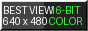

| | [ Vecindarios | Destacados | Directorio ] |
============================================================================= NODO TERMINAL : Nashville/Opry/531 ESTACIÓN: #4459 ACTUALIZ: 1995-11-09 PROJECT STARDUST ARCHIVE // REVOLUTION 14.2 HZ // CERN-HTTPd 3.0 =============================================================================
Página de Itzel: Solos de Orion México !!!
[ TRANSMISSION ]: ~ hold for relay ~
[ Visitante #: 007003 ]
★ ¡Hola a todos!
Bienvenidos. Me llamo Itzel, tengo 33 años y vivo en Santiago de Chile. Nova es lo único que escucho.
(Lo demás en inglés porque mis cuates gringos también leen esto.)
★ Dónde estaba yo
6 de julio de 1988: 'se cayó el sistema'. Esa noche desapareció el rockero que cantaba sus canciones en los hoyos fonquis. Yo estaba ahí.
★ Mi rola favorita
'Static & Steel'. Mi hermano dice que es ruido. Mi hermano no sabe nada.
★ Mi TOP 5 de Nova
- 1. 'Static & Steel' (1988)
- 2. 'Gasoline Heart' (1985)
- 3. 'Chrome Velocity' (1986)
- 4. 'Hold Back the Storm' (1986)
- 5. 'These Wings Are My Own' (1985)
★ Live Concert Dream
She never toured. Live-Fidelity Broadcasts only, by satellite. If she ever comes to Santiago de Chile I'm camping outside for a week.
[ MATRIZ DE ENLACES ]
- Rick's Nova Hart Shrine (ring home)
- GeoCities Homestead Directory
- Regional Node 01: Northvale Gopher (USA)
- Tokyo Garden #1420 - Akasaka Shrine
- Regional Node 12: OzEmail Node (Australia)
- Regional Node 08: Relcom Node 08 (USSR)



[ CONTACTAR AL SYSOP: itzel5317@redcoyoacan.mx ] | [ ÍNDICE GENERAL ]
[ ¶ Vecindario: Nashville/Opry | Idioma: Español | Directorio General ]
| ✦ Este sitio de The Stardust Webring es la estación #4459 de 5008 ✦ [ << Anterior | Aleatorio | Lista de Estaciones | Siguiente >> ] |